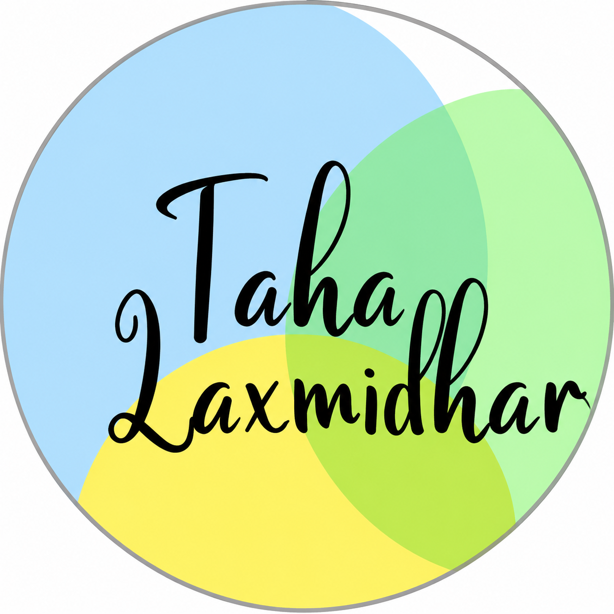

Class 11 ISC Student exploring the intersection of Coding, AI, Robotics, and human Psychology.
I am a Class 11 ISC student based in India. While I am still at the beginning of my journey, I love learning how things work—from writing logic in code and building basic robotics circuits to understanding human behavior through psychology and cinema.
Practicing programming fundamentals, solving logic problems, and building my first web pages using HTML and CSS.
Exploring how artificial intelligence models process language, assist with creative workflows, and solve everyday problems.